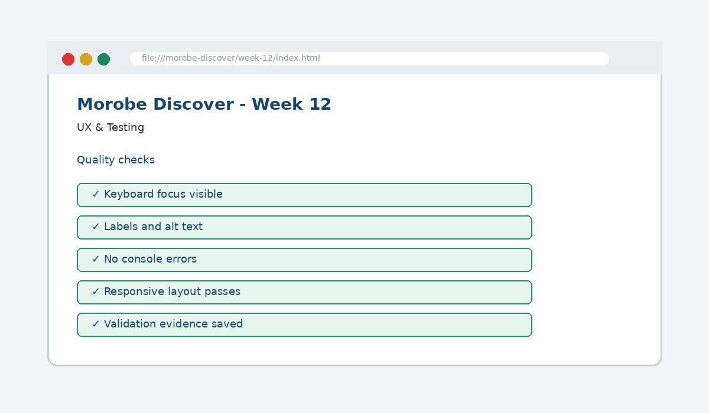

UX & Testing
Ensure the site is accessible, validated and optimized for performance.

How this week's learning connects
1. Reading
Build the conceptual foundation and vocabulary for UX & Testing.
2. Lecture
Inspect the core principle, code patterns and visible browser result.
3. Lab
Complete the guided build tasks with checkpoints, testing and Git evidence.
4. Morobe Discover
Integrate the result into the same project and preserve earlier features.
User-journey testing
Checks what users actually do across the interface.
Validation
Finds code errors browsers may otherwise tolerate.
Quality requirements
Treat accessibility and performance as release criteria.
Read the code line by line
// Test note example
Expected: menu opens with keyboard.
Actual: focus moves to first link.
Result: Pass.<img src="assets/images/market.jpg" alt="Local market in Morobe">What it does → Why it works → Where we use it
Expected
States the behaviour that should happen before the test is run.Actual
Records what the tester observed.Result
Makes the pass/fail decision explicit.alt=...
Provides text equivalent content for an informative image.
Project connection: This code belongs to the Week 12 Morobe Discover increment and should produce a visible or testable change related to Test report, validation evidence and resolved high-impact defects.
Editable browser playground
Modify the example, run it, break it deliberately, and reset it. The preview is isolated from the course page.
Morobe Discover tasks
- Create a testing checklist
- Validate HTML and CSS
- Test keyboard navigation and focus
- Run responsive and performance checks
- Record fixes in a test report
Checkpoint tests
Morobe Discover — Week 12
This is the actual source project increment supplied for this week.
Check your understanding
Knowing the definition is not enough
A weak submission can define UX & Testing but cannot point to the exact Morobe Discover file, code line and browser result. During code defence, be ready to connect code → visible behaviour → user reason → test evidence.
Prepare the next checkpoint
Week 13 deploys the production-ready website and prepares the final demonstration.